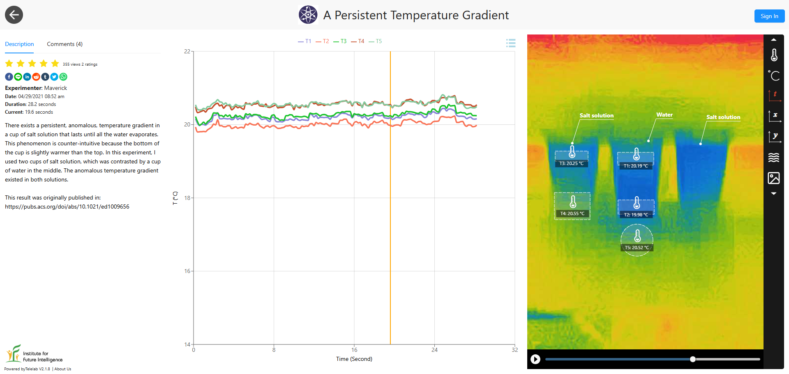

A persistent temperature gradient in saltwater
A cup of salt solution stubbornly holds a temperature gradient that resists both conduction and convection — a small-scale puzzle with surprisingly deep thermodynamic implications.
Back in 2010, with the help of a thermal camera, I discovered a persistent, anomalous, temperature gradient in a cup of salt solution (which may last until all the water evaporates). This phenomenon is counter-intuitive because the bottom of the cup is slightly warmer than the top and a warmer fluid is typically considered as more buoyant. Even without the buoyant force that drives thermal convection, the solution should have reached a thermal equilibrium (i.e., no thermal gradient) through thermal conduction, resulting in the same color for the cup in the thermal image as is in the case of a cup of pure water.
As it defies the effects of thermal conduction and convection, both of which tend to erase any thermal gradient to enforce the Second Law of Thermodynamics, this phenomenon is pretty remarkable. There must be some sort of chemical forces that are doing work to resist the Second Law of Thermodynamics. We just do not have a clear picture of the molecular mechanisms that drive it.
In this experiment, I used two cups of salt solution with different concentrations, which was contrasted by a cup of water in the middle. The anomalous temperature gradient existed in both solutions, regardless of the salt concentration.

This result was originally published in Journal of Chemical Education in 2011.
← Back to Infrared Explorer